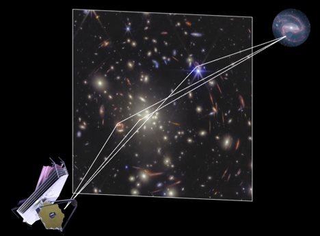
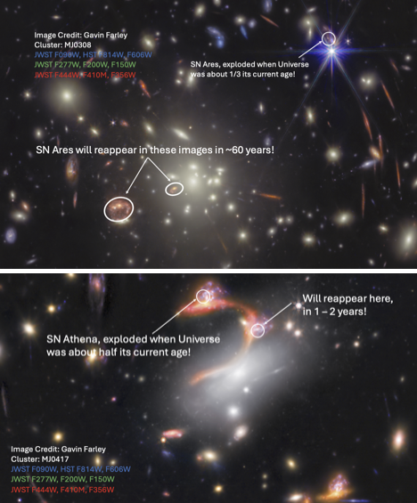

News Release
Scientific discovery from the VENUS Program
The Strongly Lensed Supernova Pantheon as Revealed by JWST
Astronomers from the Space Telescope Science Institute (STScI) and the team of the JWST Vast Exploration for Nascent, Unexplored Sources (VENUS) large treasury program have discovered two incredibly rare events – supernovae (SNe) from billions of light years away whose light has been separated into multiple images due to the bending of spacetime. Such supernovae may hold the clues to answering one of cosmology’s biggest open questions: how the Universe has evolved over cosmic time.

Peering Through Gravity’s Lenses
Any object with mass directly affects the curvature in the fabric of spacetime, a fundamental tenet of the theory of general relativity. In the extreme case when a massive cluster containing hundreds or even thousands of galaxies lies between Earth and a distant background source, the immense gravity warps spacetime so strongly that light from the background object produces several distorted and magnified images that appear at different locations across the cluster.
Astronomers in the VENUS collaboration are leveraging this effect, using JWST to take deep observations of 60 rich clusters of galaxies. Despite being only halfway through their program, they have already revealed rare, faint, and distant sources such as individual stars from the early Universe, active black holes at the centers of primordial galaxies, and stellar explosions that are undetectable without the magnifying power of the galaxy cluster lens. The discovery by VENUS astronomers of two strongly lensed supernovae, dubbed “SN Ares” and “SN Athena”, may even help to shed light on a decades-long tension in the field of cosmology.
“Strong gravitational lensing transforms galaxy clusters into nature’s most powerful telescopes,” says Seiji Fujimoto, principal investigator of the VENUS survey. “VENUS was designed to maximally find the rarest events in the distant Universe, and these lensed supernovae are exactly the kind of phenomena that only this approach can reveal.”

A Cosmological Experiment Decades in the Making
SN Ares, the first strongly lensed supernova discovered by VENUS, resulted from the explosion of a massive star when the Universe was only 4 billion years old, half as old as it was when our Solar System was formed. During its long transit to Earth, the light from SN Ares was not only bent and magnified by an intervening galaxy cluster, but also stretched due to the expansion of the Universe itself.
This long journey of SN Ares is more than an observational curiosity, it turns the supernova into a long-term experiment in cosmology. One of the central questions in cosmology today concerns the rate at which the Universe is expanding, known as the Hubble Constant. Measurements based on the cosmic microwave background -- the light from the earliest moments of the observable Universe, currently disagree with those derived from nearby distance indicators such as Type Ia supernovae, hinting at possible gaps in our understanding of cosmic evolution. Because its multiple images will appear decades apart (with the last two arriving after an unprecedented 60 years) the Ares system offers a rare opportunity to test our understanding of the Universe’s evolution, providing a benchmark for whatever questions shape cosmology in the future.
“Such a long anticipated delay between images of a strongly lensed supernova has never been seen before and could be the chance for a predictive experiment that could put unbelievably precise constraints on cosmological evolution,”says Conor Larison, a postdoctoral research fellow at STScI. Conor continues, “It is hard to know what the key questions of the day will be in 60 years, but what is certain is that this reappearance will provide the most precise, single-step measurement of cosmology we have ever had the chance to make.”
SN Athena, another strongly lensed supernova discovered by VENUS that occurred when the Universe was around half its current age, is expected to reappear within just the next 1 to 2 years.
“The predicted time delay to the next image of SN Athena of a few years will allow us to weigh in on the value of the Hubble Constant at a time when such an independent measurement is sorely needed,”says Justin Pierel, an Einstein Fellow at STScI, “It may help to cement the possibility of new physics, or alternatively, point to unknown systematics in the best current cosmological analyses.”
SN Ares and SN Athena represent long-baseline experiments in cosmology. They are windows into how the Universe has changed over billions of years, and are a reminder that some of its answers to our deepest questions may still be on their way.
Media Contact
Conor Larison
Space Telescope Science Institute
clarison@stsci.edu
+1 (717) 454-9739
The James Webb Space Telescope is the world's premier space science observatory. Webb is solving mysteries in our solar system, looking beyond to distant worlds around other stars, and probing the mysterious structures and origins of our universe and our place in it. Webb is an international program led by NASA with its partners, ESA (European Space Agency) and CSA (Canadian Space Agency).